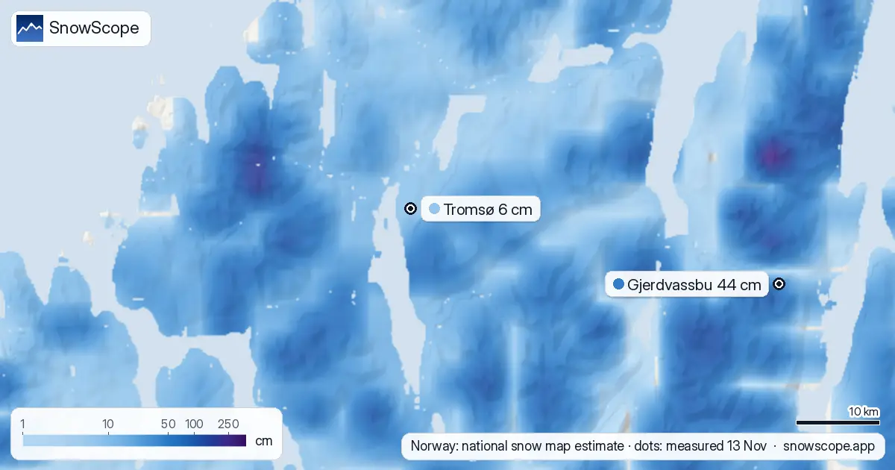

Lumiraportit
Päivittäiset lumiraportit laskijoille: missä lunta on, mitä on tulossa ja missä kannattaa laskea, SnowScopen lumikartasta ja mittausasemilta. Jokainen luku tulee päivän tiedoista.


Himoksen lumi marraskuun puolivälissä 2026: Jämsän ympäristön sääasemilla mitattiin 13. marraskuuta 0–2 cm; ensilumen latu avautuu 14. marraskuuta, rinteiden avauspäivä ei ole vielä tiedossa. Sateen riski ja 46 mennyttä talvea.

Rørosin koiravaljakko-opas talveksi 2026–27: Norjan kansallisen lumikartan mukaan noin 5–6 cm lunta, Destination Rørosin listaamat kennelit hintoineen, Femundløpet-rekikoirakisa helmikuussa 2027 ja oman koiran säännöt kesyjen porojen lähellä.

Vuokatin lumitilanne marraskuun puolivälissä 2026: Sotkamon asemilla mitattiin 13. marraskuuta 0 cm, Kajaanissa 1 cm; tälle viikolle ennustetaan noin 9 cm, osin vetenä; rinteet aiotaan avata 4. joulukuuta. 46 mennyttä talvea.

Tahkon lumensyvyys marraskuun puolivälissä 2026: rinnekausi avattiin 13. marraskuuta tykkilumella, 14 hissistä 2 käynnissä; lähiasemilla mitattiin 0 cm, kun lyhytaikainen 2–4 cm:n lumipeite suli. Tuleva viikko ja 46 mennyttä talvea.

Rovaniemen husky- ja koiraopas talveksi 2026–27: sääasemilla mitattiin 13. marraskuuta 7–8 cm, kaupungin ensimmäinen latu avattiin, kolme Visit Rovaniemen listaamaa huskytilaa päivineen ja hintoineen, päivänvalo ja oman koiran säännöt.

Kiirunan koiravaljakko-opas talveksi 2026–27: Kiirunan sääasemalla mitattiin 13. marraskuuta 0 cm lunta, Kiruna Laplandin listaamat yrittäjät kausineen ja hintoineen, lyhyet päivät sekä oman koiran säännöt laduilla, poronhoitoalueella ja Abiskon kansallispuistossa.

Saariselän lumiraportti marraskuun puolivälissä 2026: Saariselän sääasema mittasi 13. marraskuuta 4 cm, sama koko viikon; seitsemälle päivälle ennustetaan noin 22 cm ilman sadetta; rinteet aiotaan avata 21. marraskuuta.

13. marraskuuta 2026 Tukholman ja Helsingin sääasemilla mitattiin 0 cm lunta, kun Sälenissä oli 45 cm ja Uumajassa 20 cm. Selitys löytyy korkeudesta, merestä, kaupungista ja myrskyjen reitistä, ja 46 mennyttä talvea tukee sitä.

Pyhä-Luoston lumensyvyys marraskuun puolivälissä 2026: tuntureiden ympäristön sääasemilla mitattiin 13. marraskuuta 0–9 cm, alle normaalin; tälle viikolle ennustetaan noin 23 cm ilman sadetta. Avaussuunnitelmat ja 46 mennyttä talvea.

Käytännön opas koiravaljakkoajeluihin Tromssan ympäristössä talvella 2026–27: matkailutoimiston listaamat huskytilat, lumikauden alku, ajelun hinta, kaamos ja säännöt oman koiran lenkitykseen lumella ja porojen lähellä.

Helsinki koiranomistajille tänä viikonloppuna: perjantaina kaikilla viidellä kaupungin asemalla mitattiin 0 cm lunta. Östersundomin koirametsä, lähes sata koira-aitausta, latujen säännöt ja harmaa, leuto viikonloppu.

Mitattu lumi Oulussa 13. marraskuuta 2026: Kaukovainiolla 7 cm, Hailuodossa 5 cm, Ruukissa 8 cm, kaikki torstain jälkeen satanutta. Vähän lisää tulossa ennen maanantain suojasäätä.

Mitattu lumi Rovaniemellä 13. marraskuuta 2026: lentoasemalla 7 cm, Apukassa 8 cm. Lähellä tavallista marraskuun puoliväliä mutta vähän sen alle, ja edessä kylmä ja luminen viikonloppu.


Tampere 13. marraskuuta 2026: Tottijärvellä ja kaupungin ympäristön asemilla 0 cm, koillisessa Hyytiälässä 2 cm. Puolessa talvista Tampere oli valkoinen 10. marraskuuta mennessä. Lauantaina häivähdys märkää lunta.

Mitattu lumensyvyys Suomessa 13. marraskuuta 2026: 58 asemaa 161:stä valkoisia, lähes kaikki 64. leveyspiirin pohjoispuolella, paksuin vain 13 cm Kilpisjärvellä. Etelä, myös Helsinki ja Tampere, on paljas.

Helsingin lumensyvyys 13. marraskuuta 2026: 0 cm Kaisaniemessä, Kumpulassa, Tapiolassa, Helsinki-Vantaalla ja Nuuksiossa. Tavallinen ensilumen päivä ja viikonlopun ennuste, joka pitää kaupungin harmaana.

Maassa mitattu lumi 13. marraskuuta 2026 Oslossa, Bergenissä, Trondheimissa, Tromssassa, Tukholmassa, Göteborgissa, Östersundissa, Uumajassa, Luulajassa, Kiirunassa, Helsingissä, Tampereella, Oulussa ja Rovaniemellä: Uumajan 20 sentistä Kiirunan paljaaseen maahan.